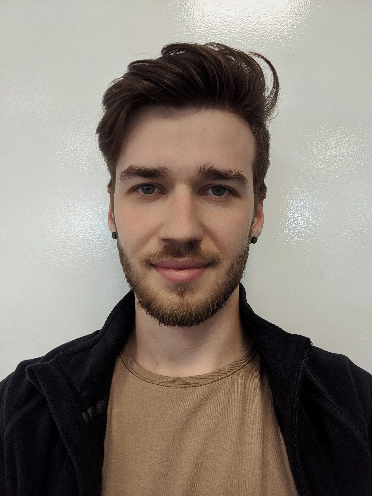

My Resume
Summary
Become a software engineer has been my dream for quite some time, that's why I decided it is time to take this very seriously and take an online Web Development Bootcamp course.
Education
- 1998 - 2007: Primary School 39
- 2007 - 2010: Mihai Viteazul High School
- 2010 - 2012: USM, Faculty of Journalism and Communications
Work Experience
- January 2014 - August 2014: Some job at a call center
- March 2016 - January 2017: Video Editor at Jurnal TV
- February 2018 - July 2019: Video Editor at Prime TV
- July 2019 - January 2020: Truck Dispatcher at GIZA Inc.
- July 2020 - Present: Technician at Endava
Skills
- Amazing
- Great
- Unforgettable
Other Achievements
Too much to add here, but I think I should mention that I'm a great drummer as well.
Relevant Links:
My GitHubMy Facebook